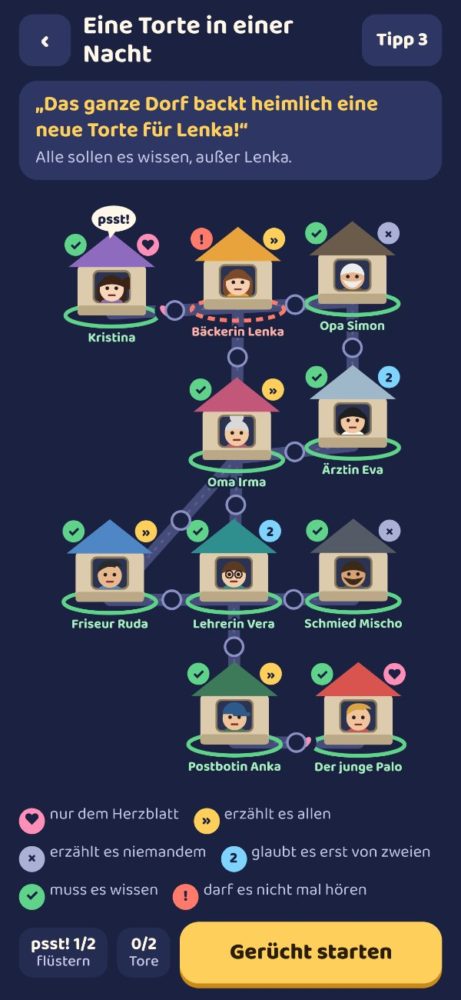
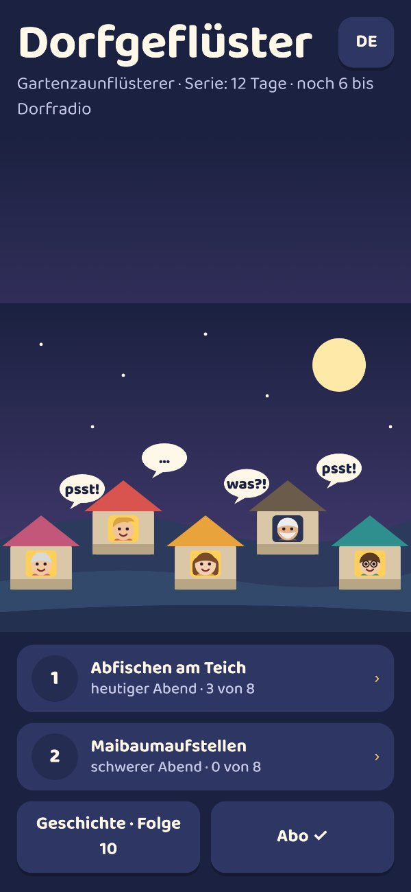
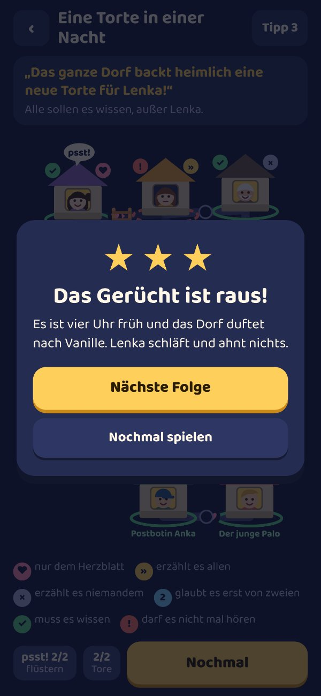

Wer soll es hören, und wer darf es nie erfahren?
Ein gemütliches Rätselspiel für den Heimweg. Flüstere einem Nachbarn ein Gerücht zu und sieh zu, wie es über die Gartenwege von Tuscheldorf wandert. Oma erzählt es allen, Opa niemandem, und der Bürgermeister glaubt erst, was er zweimal hört.
Bald bei Google Play und im App Store
So wird gespielt
- Lies das heutige Gerücht und wer es hören soll oder nicht.
- Tippe auf einen Nachbarn, um es ihm zuzuflüstern.
- Schließe Gartentore, damit es nicht ins falsche Haus kommt.
- Starte das Gerücht und sieh zu, wie es wandert. Jeder Nachbar hat seine Eigenheiten.


Jeden Tag zwei neue Abende
Acht Gerüchte pro Abend, jedes etwas schwerer. Etwa 20 Minuten, ideal für Bus oder Bahn.
Eine Geschichte in Folgen
Eine verschwundene Torte, ein geheimer Antrag und ein Fremder im Pelzmantel, in zwei Staffeln.
Ein Daumen, kein Ton nötig
Große, klare Bilder. Spiel im Stehen in der Straßenbahn, jederzeit pausieren.
Funktioniert offline
Kein Konto, kein Internet nötig. Neue Abende erscheinen jeden Tag von selbst.
Preis
Kostenlos laden. Der erste Abend jedes Tages und die ersten drei Folgen der Geschichte sind gratis, mit kurzer Werbung zwischen den Gerüchten. Dorfgeflüster Plus schaltet die ganze Geschichte frei, jeden Tag einen zweiten, schwereren Abend und keine Werbung: 7 Tage gratis, danach 4,99 € pro Monat oder 39,99 € pro Jahr. Zusätzliche Tipps: 5 für 0,99 €. Jederzeit in den Store-Einstellungen kündbar.
Hilfe und Kontakt
Steckst du bei einem Gerücht fest oder hast eine Idee fürs Dorf? Schreib uns, wir beantworten jede E-Mail.
parentshelpmy@gmail.com